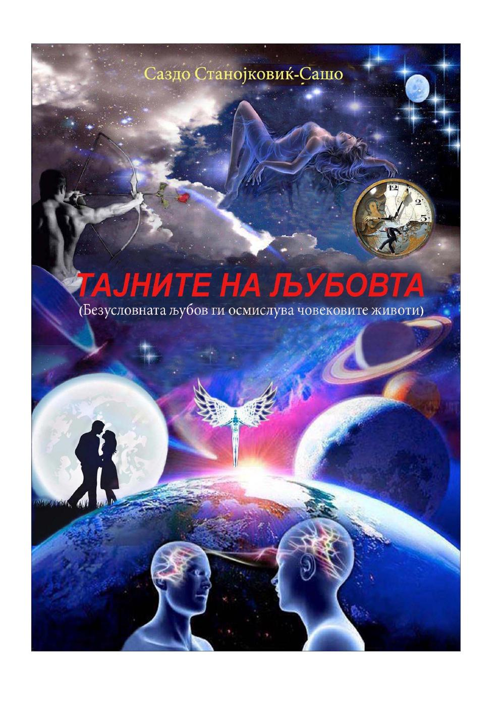

Книга 5 · Дел од 7-книжниот комплет „Енциклопедија (Библија) на животот и неговата смисла“ · COBISS verified
Тајните на љубовта
Безусловната љубов ги осмислува човековите животи.
620 ден. / 10 €
Поучна книга за видовите љубов и за патот кон вистинска љубов што е обострана, безусловна и трајна.
Книгата ја разгледува љубовта како темел на пријателството, интимните и брачните односи. Обработува искреност, доверба, почитување, верност, простување, љубомора, избор на партнер, брачна хармонија и авторска формула за обострана, безусловна и трајна љубов.
Книга 5 · Дел од 7-книжниот комплет „Енциклопедија (Библија) на животот и неговата смисла“ · COBISS verified